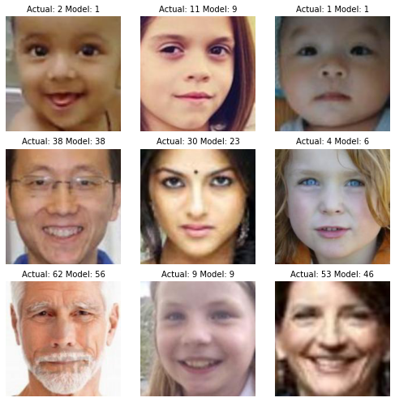
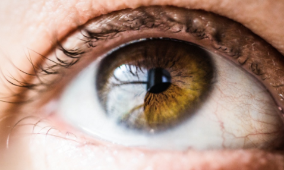
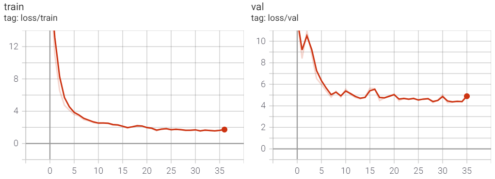
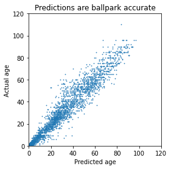
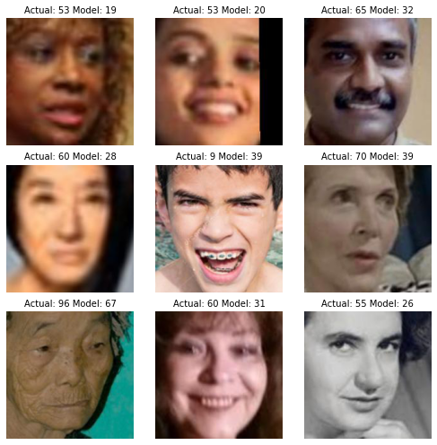
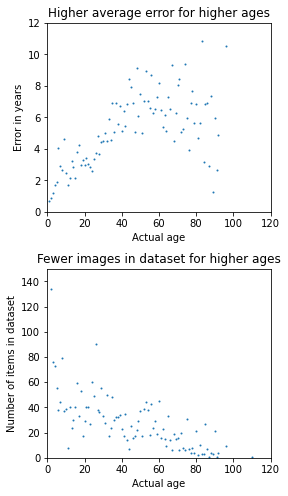

This blog is about predicting someone’s age by their face. I’ve also made an webpage where you can try to beat the computer.
Deep learning has seen incredible results the last couple of year. As long as you have a large enough dataset, it you can transform any input to any output. A couple of examples:
- Image classification, where you map an image to a label (input an image of a frog, computer outputs ‘frog’)
- Sentence generation (if I start a sentence with ‘Today, the weather is’, computer outputs ‘great, let’s take a walk’.
- Recommender system (which is the next video that will be most likely to keep the user watching) As an aside, deep learning is not without it’s ethical problems, for example these social media recommender systems have a tendency to radicalize people, since that maximizes their ‘engagement’ to the platform.
In this project, I’ve taken on a image regression problem. It’s a nice problem, because the answer is not always obvious: some people look older or younger than they really are. By showing the computer model examples and giving feedback how wrong it is on its prediction, the model is improving. We don’t have to explain anything about how an old or young person looks like. Can you imagine how difficult it would be to program how to recognize wrinkles? This is essentially the wonder of neural networks.
When training a model, an important part is the performance metric. For this task of guessing someone’s age, I’ve chosen Mean Absolute Error, basically how many years you’ve guessed wrong. A prediction of 12 on an actual age of 10 means the MAE is 2, just as a prediction of 8 also has an MAE of 2.
The dataset contains about 10.000 images, I’ve trained the model on 70% of the dataset. That leaves about 3k images which the model has not seen. We use this to test it’s performance. In theory, this performance will generalize to other unseen images. In practice that remains to be seen, since real life images can be much messier, e.g. in quality, zoom level and background.
Below you can see it getting better over time. The horizontal axis displays how many times we feed the training set to the model. The left graph shows performance on the training set, the right graph on the test set. Initially, it’s off by about 11 years, and slowly converging to a MAE of 2 years. But taking the performance on the training dataset is cheating, we are interested in it’s performance on unseen images! The performance there converges to around 4.2.

Let’s check out predictions on some random images in the test set. In the title the actual age and the predicted age by the model.
That looks pretty good! To take a more general approach, let’s plot the all the images from the test set in a graph.

There are definitely some errors, but overall it seems reasonable. It’s also interesting to plot the faces where the error was largest.

In most of the cases the model was simply off, but there are also faces which look much older or younger, or very blurry ones. Which highlights the importance of understanding the dataset and potentially removing outliers from it.
Another approach is to visualize the average error by age.

The error gets larger as someone gets older, which makes perfect sense: when you see a baby you are not going to guess wrong by more then 5 years, but for someone age 50 that is more difficult.
You could argue for a slight improvement in the predictions with ages > 60, but it could also be an anomaly. There are few really old faces in the dataset, which could be of influence. There are also 300 images of babies age 0 in the dataset, which I removed from the second chart to have a better visualisation.
I’ve build a webpage where you can try out if you can beat the computer, or even upload a selfie for fun to see how old the computer thinks you are. Please take the results with a grain of salt. I’ve taken some selfies and the computer estimated me around 27 to 42, which is ballpark accurate. However, a condolence card of my grandmother age 92 was classified as 62, and although she did look young, 62 was an underestimation.
I’ve had much fun with this project. I hope you like it as well and will try out the application. No guarantees it will be online indefinitely by the way.